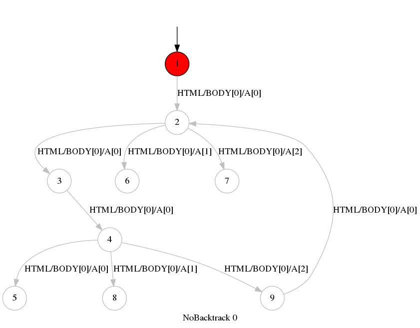

A web site with one PHP session variable. The variable is reset when visiting index.php, inverted when visiting page2.php and page7.php. The contents of page1.php depends on the value of the session variable: it displays links to pages 2-3-4 if it is not set, and to pages 5-6-7 if it is set.
Hence, pages 3-4 can only be accessed if the session variable is not set, and the opposite for 6-7. Trying to access these pages with the incorrect value of the session variable results in the application returning a 404 HTTP error response. This is similar to e.g. GitHub, which returns a 404 when one tries to access a page that needs login without being logged.
Any application that uses backtracking will fail to explore the site properly. After visiting page2, any backtracking to page1 will yield a page with different links than the first time it was visited: the page one receives is not the one that is expected. A sound crawler should identify this discrepancy and fail. This is the case of VanillaWsm and BacktrackWsm. A proper exploration with the NoBacktrackWsm yields the following graph:
